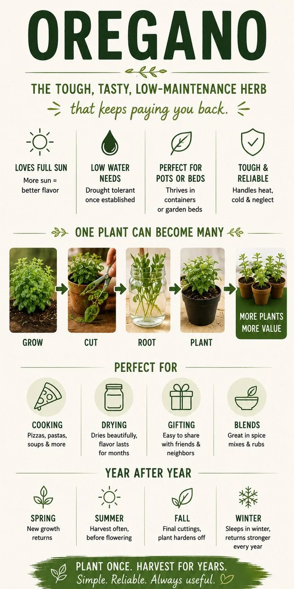

Oregano is quiet. Durable. Long-term value.
If basil is the sprinter, oregano is the marathon runner. Plant it once, and it can keep feeding the kitchen, filling jars, and coming back again long after flashier herbs are finished.
Oregano at a glance
| Difficulty | Very easy |
| ☀️ Sun | Full sun |
| 💧 Water | Low to moderate |
| 🪴 Container Friendly | Excellent |
| ✂️ Harvest Speed | Medium |
| 🌱 Beginner Friendly | Very high |
| 🫙 Good for Drying | Excellent |
| 🧊 Good for Freezing | Good |
| 🌿 Backyard Value | Very high |
| 📅 Lifespan | Perennial in many areas |
How big does oregano get?
Typical plants often reach 12 to 24 inches tall and 18 to 36 inches wide. Older plants can become surprisingly large.

Existing QBL illustrationWhy oregano is one of the smartest herbs you can grow
Most herbs get judged by how much they produce and how good they taste. Oregano adds a third category: longevity.
Plant it once. Harvest for years. That is where much of its value comes from.
Why it keeps paying you back
Fresh meals, dried spice jars, gifts, divisions, and multi-year harvests are all part of oregano’s quiet value story.
What oregano likes
- Full sun: 6+ hours daily, more sun usually means stronger flavor
- Well-drained soil: average, sandy, or rocky soil beats soggy ground
- Airflow: breezy spots help with flavor, drying quality, and disease prevention
What oregano hates
- constantly wet roots
- poor drainage
- deep shade
- overwatering
- heavy clay
Watering, seed vs plant, and containers
Oregano does not need constant attention. Water deeply, then let the soil dry somewhat before watering again. Think Mediterranean herb, not water garden plant.
For most people, a starter plant is the easiest move. Oregano grows from seed too, but a plant gets you to the useful part faster.
Containers are an excellent choice. A 10 to 12 inch pot is a good starting point, and garden beds often make oregano larger and tougher over time.
The secret to bigger harvests
Do not just pick random leaves. Harvest stems, especially upper growth, before flowering.
That encourages branching, thicker plants, and more harvests. Usually start once the plant is 6 to 8 inches tall and looks established.
During the growing season, every few weeks is realistic for a healthy plant.
The flower question
Unlike basil, oregano flowers are not a disaster. They attract pollinators and look good, but best flavor usually comes before flowering.
For drying, right before flowering is often the strongest harvest moment.
Why oregano is a drying superstar
This is where oregano really separates itself from basil.
Basil loses a lot during drying. Oregano thrives. The flavor concentrates, storage becomes easy, and the value lasts for months.
How to dry oregano
- harvest stems
- remove damaged leaves
- bundle loosely
- hang upside down
- dry in shade with airflow
Usually this takes 1 to 2 weeks.
What to do with extra oregano
- Cook with it: pizza, pasta sauce, roasted vegetables, soups
- Dry it: usually the best option
- Gift it: herb jars, seasoning blends, kitchen baskets
- Trade it: dried oregano stores well and is easy to share
Can you divide oregano?
Yes, and it is one of the coolest parts of growing oregano. After a few years, dig up the plant, split it into sections, and replant. One plant becomes several.
Winter survival
In many climates, oregano returns every year. Winter may kill top growth, but the roots survive and the plant comes back in spring.
When is oregano finished?
Annual basil dies. Oregano often does not. Many gardeners get 3 years, 5 years, or even longer from one plant.
Common oregano problems
- Weak flavor: usually not enough sun
- Yellow leaves: usually too much water
- Sparse growth: usually needs pruning
- Woody center: older plants get woody, cut back hard or divide
Oregano timeline
🌿 Don’t miss new Herb Hub guides
Get new herb guides, backyard ideas, projects, and updates from around the yard.
No spam. Just the next good thing when it’s ready.